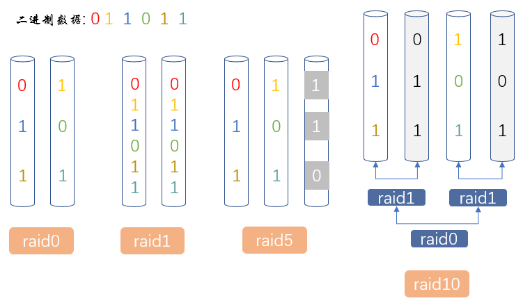

计算机硬件组成
服务器¶
个人电脑跟服务器都是计算机,只不过前者是服务于一个人,后者是服务于多个人..
服务器的分类¶
1> 按照尺寸 1U=4.45cm (U表示服务器的厚度)
2> 按照外形 机架式服务器是放在机架上的;
刀架服务器 (贵 通常用于集群化作业,便于扩展)
塔式服务器
3> 按照品牌 戴尔 惠普 IBM
服务器最好一直运行着对外提供服务,不要宕机; 但对硬件的损耗很大,要做好对硬件的监控,防范于未然.
有些服务器还有IDRAC管理口,用于配制远程管理卡,可以远程开关机服务器..
Q: 服务器的安置?
A: 机房会提供显示器方便机架式服务器的上架(初次会给服务器安装OS,配网络等..);
再回到公司,通过xshll远程连接.
但现在很多公司都不买服务器,用云服务器..(云主机厂商 -- 阿里云 腾讯云 青云 ucloud)
Q: 如何保证服务器不断电?
A: 双电源 + ups + 发电机.
ups相当于一块蓄电池.. 市电接到ups上,ups再给服务器供电,一旦断电,ups还可以供电一段时间..
去IOE运动¶
| 去IOE前 | 去IOE后 |
|---|---|
| IBM: 服务器 | dell服务器 |
| Oracle: 数据库管理软件 | mysql |
| EMC: 数据存储设备 | 用普通硬盘构建 ceph块存储、nfs文件存储、swift对象存储 |
Ps: 小型机 一般会基于Unix定制专门的OS.. 架构也不一样,采用的精简指令集处理器.. (小型机因为去IOE运动被淘汰了 比较有名的是IBM)
补充:
服务器的集群会有一个带头大哥,负责请求的一些分发,负载均衡(有两种级别:硬件>软件 通常接触的是软件)
eg: nginx-7层; lvs-4层
[网线] 橙白 橙 绿白 蓝 蓝白 绿 棕白 棕
计算机硬件¶
摩尔定律: 硬件的性能每隔18个月会更新一倍.. (现在不适用啦Hhh)
注意,在公司里不建议自己组装电脑,不稳定.. 自个儿买硬件装电脑,若是双cpu,需要装同一型号的..
硬件五大组成¶
1> 控制器: 计算机的指挥系统,负责控制其他硬件的运行. --- 大脑的指挥能力
2> 运算器: 负责运算(数学运算和逻辑运算) --- 大脑的思考能力
3> 存储器: 负责存储数据
内存: 基于<电>(高低电平)存取数据.. 断电数据全部丢失. --- 大脑的记忆功能
只能 临时 保存数据.. 存取速度很 快.
外存: 以磁盘为例.. 基于<磁>存取数据.. 断电数据仍然存在. --- 本子
可以 永久 保存数据,存取速度相对 慢 一些..
4> 输入设备: eg 键盘、鼠标 --- 人的眼睛耳朵
5> 输出设备: eg 显示器、打印机 --- 面部表情
控制器 + 运算器 = CPU中央处理器
CPU + 内存 ---> 大脑！
cpu(x86-64) ; 内存(buffer、cache) ; 硬盘(IDE、SATA、SAS接口; 机械、SSD固态)
程序与三大核心的关系¶
计算机三大核心: cpu、内存(主存储器)、硬盘
安装、加载¶
我们经常提到的<进程>说的就是<内存中的程序>, 即程序从硬盘加载到内存了..
1> 下载安装(就是拷贝文件)的软件(本质上就是一堆代码文件..)会装到硬盘上...
计算机硬盘的大小决定了能够 安装 的软件数目
2> 软件的运行会将程序的 [代码和数据] 从硬盘加载到内存中
计算机内存的大小决定了能够 同时运行 的软件数目
3> 软件的 <启动> 速度 是由硬盘决定的,因为它需要从硬盘读入内存. 固态会比机械快..
so,开机速度(会加载操作系统,操作系统也是一个软件)也跟硬盘有关.
缓存、缓冲区¶
cpu再从内存中读取数据进行运算以及对其他硬件的控制. cpu运算产生的数据往内存、硬盘里面存.
cache 缓存 (读): linux操作系统对读取数据的优化机制.
它会将硬盘数据在内存中先缓存好,cpu取的时候可以直接从内存中去..
举例 : 读取硬盘中的某一文件,第一次没啥速度提升.
第二次读取它时就直接读内存里的cache缓存就行.速度提升.
注意 : cache不能缓存硬盘所有的数据,它只会缓存常用的,经常访问的数据..
(怎么判别？linux操作系统说的算) 内存不够用了,我们可以将内存中cache缓存空间释放掉...
buffer 缓冲区 (写): 不会立马将数据往硬盘里刷,Linux操作系统对此有个优化
当有数据要从内存放到硬盘里时,OS会将数据在内存里缓冲下,攒一大波,再一起往硬盘里面送..
小提一嘴: cache缓存和buffer缓冲区是linux操作系统自带的优化机制,windows系统是没有的.
buffer和cache的空间可以释放掉,但通常释放cache; buff的释放要谨慎点,避免释放时数据还未写到硬盘..
cpu详解¶
两个生产厂商: Intel AMD

x86-64¶
计算机是基于电工作的,所以内存里放的是电信号..表示01二进制的高低电平...
硬盘以磁盘为例. 磁的特性跟电也是一样高低变化的.. 从磁盘读数据到内存,就是将磁信号转成电信号.
32/64位: 32位/64 位 cpu分别代表每次(一次性)能从内存里读取的32/64个 二进制数
它们规定32/64位会组成一个完整的指令 .. 换个说法,指的是cpu一次(一个指令)能处理多大的数据..
学术一点, 32位指的是CPU通用寄存器的数据宽度,32位处理器一次只能处理32位,也就是4个字节的数据;
而64位处理器一次就能处理64位, 即8个字节的数据.
如果将总长128位的指令分别按16位、32位、64位为单位进行编辑的话, 32位的处理器需要4个指令;
而64位处理器则只要两个指令.显然, 在工作频率相同的情况下, 64位处理器的处理速度比32位的更快...
x86架构: x86是针对cpu的型号或者说架构的一种统称. 最早的那颗由Intel发明出来的CPU代号称为8086,后来在8086的基础上又开发出了80286、80386...., 因此这种架构的CPU就被统称为x86架构啦.
程序员开发出的软件最终都要翻译成cpu的指令集才能运行, 因此软件的版本必须与cpu的架构(eg: x86)契合. 并且,
安装包 mysql-5.7.20-win32.zip 里的32就代表此软件是32位的,能运行在32位和64位的cpu之上.
x86-64指运行在复杂指令集的64位cpu上.
cpu指令集¶
简介¶
注意哦 , cpu不会自发的控制其他硬件的运行.因为cpu本身也是硬件, 硬件都会受软件的支配 !!!
人类通过编写程序软件来控制cpu,这些人类的指令指挥cpu内部集成的二进制指令集来操作其它计算机硬件
而早期的二极管相当于人类直接编写二进制指令来控制计算机硬件..
简单来说: 取指 (程序指令) -- 解码 (具体的二进制指令) -- 执行 (操作相应硬件)

现在的cpu可以有多条这样的流水线(取指--解码--执行) 平常我们说的2核4线程里面的线程指的就是这样的流水线..
2核,可以简单理解将2个cpu核心集成到了一个cpu上.
2核4线程,指的是2核有4条流水线,即每个核内部有两条流水线..物理层面的2核,假的四核.
性能比较: 纯4核 > 2核4线程 > 纯2核
注意哦!
多线程运行cpu保持两个不同的线程状态,可以在纳秒级的时间内来回切换,速度快到你看到的结果是并发的,伪并行的.
然而多线程不提供真正的并行处理,一个cpu同一时刻只能处理一个进程(一个进程中至少一个线程)
<Inter和AMD在对多核芯片的设计上不同>
首先要知道,通常说的L1缓存指的就是cpu内部的寄存器,L2缓存(不在cpu里面)是处于内存和寄存器之间的高速存取设备.
以4核为例,Inter的4个核共享一个L2缓存;而AMD的每个核都有与自己关联的L2缓存..
相比之下,AMD要处理缓存数据同步的问题..Inter要解决缓存数据竞争的问题..
分类¶
cpu内部集成的微指令集分为两类: 精简和复杂..
1> 精简指令集(了解):
优: 指令短,每个指令的运行时间都很短, 完成的动作也很单纯,不容易出错;
劣: 实现一个功能,所需的指令条数会很多.. 所以设计起来会比较复杂.
2> 复杂指令集:
每条指令花费的时间较长, 但每条个别指令可以处理的工作较为丰富.. 所以设计起来会比较简单.
eg: Intel开发的 x86架构 的CPU.
cpu寄存器¶
寄存器: 与cpu一样的材质制成,速度非常快,几乎无延迟.. 不是存储的主力.与内存一样断电无.
CPU运算过程中产生的数据先放到自己的寄存器中,再放到内存中...为了永久存储再倒腾到硬盘中.
如何提速,在彼此之间加高速设备! 寄存器 - 内存 - 硬盘 存在即合理..(造价 容量 速度)
内核态与用户态!!¶
从计算机整体的角度(或说是cpu的视角):
内核态: 计算机内存正在运行操作系统程序,可以操作硬件
用户态: 计算机内存正在运行应用程序,不能操作计算机硬件
从操作系统的角度: 操作系统内核运用于内核态、系统调用运用于用户态.
内核态和用户态不是新知识点,只是为了便于阐述的两个名词..
应用程序的运行必然涉及到计算机硬件的操作,则需要从用户态转到内核态.
So, 计算机无时无刻不在发生着内核态和用户态的来回切换..
比如应用程序QQ发送接收一段文字,qq必须通过操作系统来控制网卡这一硬件来发送信息(用户态 --> 内核态),也需要通过操作系统控制网卡接收对方回复的消息数据给qq.(内核态 --> 用户态)
存储器详解¶
存储器分类¶
人类现目前无法制造出一种价钱便宜容量大速度超快的存储器... 只能造出不同的硬件做不同的事情.

1> cpu使用某一数据,会依次在 寄存器 (也称作L1缓存)、 高速缓存 (L2)、 内存 (存储的主力)中查找;
2> 计算机会将cpu立马会用到的数据放寄存器..在内存中经常访问到的数据放到高度缓存里(避免重复寻址).
3> 我们通常在硬盘(分为机械磁盘和固态硬盘)中放永久存储的数据,磁带中放备份的数据.
Ps: 若在查找的数据在高速缓存中找到了,称为高速缓存命中!
磁带在慢慢退出历史舞台,因为磁盘越来越便宜了.
内存¶
ROM¶
内存(RAM): 可读可写,断电数据丢失. 存放qq、微信、微博等cpu要运行的应用程序.
只读内存(ROM): 存储速度跟RAM一样, 只能用于读 ,断电数据不丢失.
存放BIOS(Basic Input Output System基本的输入输出操作系统)
计算机生产厂商在刚造出计算机的时候,在ROM芯片里把BIOS操作系统的代码就写进去了.. 兜底.
Ps: 虽然是只读的,但也可以刷,一般给生产厂商刷,自己刷失败了,这堆硬件就真成废铁啦..(´▽｀)
电脑一开机,cpu会先去ROM里读BIOS系统来接管硬件的运行(在电路上规定死了的)..
会扫描BIOS设置的启动项, 去启动真正的OS(OS是安装在某一块硬盘之上的 以linux为例)
将linux从硬盘读到RAM中.. 通过linux系统去接管硬件的运行.
若在启动项中没有找到操作系统,就需要安装操作系统啦(这就涉及用光盘,U盘启动盘等).
BIOS系统相当于一个过渡的过程, linux和BIOS都能控制硬件的运行,但linux操作系统更强大一些..
CMOS¶
BIOS系统会修改一些配置(比如启动项优先级的调整,加密设计的密码,计算机的时间..),
其产生的数据不能直接放到ROM里,因为ROM是只读的;
这些数据会放到 CMOS (断电数据就没,耗电量很低,很小块电池就能使用若干年)里面..
计算机刚开始启动时的体系 --- CPU + ROM + CMOS (存储BIOS配置数据)
计算机启动起来以后的体系 --- CPU + RAM + 硬盘
Ps: 断电后,主板上有一块电池在给CMOS和时钟芯片(保证关机后开机时间还是正确的)供电.
[硬盘接口]¶
硬盘大致分为两类
机械磁盘(买的时候主要看转速这一指标)、固态硬盘(简称SSD).. 理论上都是永久存放数据的
前者依赖磁存取数据,后者依赖电子存取数据.. 不管怎样都是高低的变化来表示二进制.冷知识: 1B/Byte/字节 = 8bit/比特位/位/二进制数 1KB = 1024B
bit B KB MB GB TB PB EB ... ...
市面上卖的硬盘都是按照1000来计算的,500G的硬盘=500 x 1000 x 1000 x 1000 字节
◎ 接口¶
1> IDE 并口 -- 发数据时每个针脚彼此之间会有干扰..会影响传输速度
2> SATA 串口 -- 传输速度、稳定性都强于IDE
3> SCSI -- 为小型机打造的
4> SAS -- 将SATA与SCSI接口的优势相结合 (服务器硬盘的主流)
5> 光纤通道 -- 主要用在高端服务器上,比如专业的存储设备
◎ 硬盘与接口组合¶
SSD + SAS > SSD + SATA > 机械磁盘 + SAS > 机械磁盘 + SATA
服务器在 高并发场景 下,有个性价比比较高(就是缺钱..)的方案:
将 热数据 (用户经常访问的数据)放到 SSD+SAS 上, 冷数据 (不经常访问)放在 机械硬盘+SAS 上..
服务器在常规场景下:
对速度有特殊要求,选择 SSD + SATA ; 比较核心,对速度要求不怎么高的业务用 机械磁盘 + SAS.
而公司内部的服务会用 机械磁盘 + SATA.
Ps: 现在底层的基础设施都不是一上来就用高端的硬件来堆叠,而是用一些性价比比较高的硬件通过技术手段(比如集群)提高其性能.. 当然不差钱另说..
◎ RAID技术¶
磁盘阵列 raid -- 对硬盘做集群.
Ps: 集群的好处 1. 防止单点故障(实则是为了预留排查纠错时间) 2.提升性能
服务器通常会配置多块硬盘,通过名为RAID的技术手段合成一块硬盘(对外暴露就是一块盘)...
多块硬盘要连接到 RAID卡 (阵列卡)上,然后制作raid...
Ps: 硬raid -- 通过raid卡制作的raid; 软raid(几乎不用) -- 通过软件制作的raid.. 硬raid更好.

常见的raid有四种..
1> raid0: 至少1块盘(若真用一块,凸显不出raid的优势..),通常会大于1块盘.
<将连续的数据分散到多个硬盘上存取.>
容量 -- n块盘合在一起的总容量;硬盘容量不浪费.
具有在所有RAID级别中最高的存储性能,原理是将连续的数据分散到多个硬盘上存取.
性能 -- 理论上是n块盘合在一起的读写速度,实际上要低一些;
冗余 -- 不允许坏任何一块盘;(冗余性即考虑单点故障的问题)
场合 -- 追求读写性能,但是对数据安全性没有要求.
eg: 集群服务器 (更推荐用raid5)
即集群中的每个服务器中的多个硬盘都做应用程序的raid0
不怕应用程序代码没了,因为集群中每台服务器都有
PS: 数据库从库mysql slave;集群中的节点RS.
特点 -- 速度快,无冗余,容量无损失.
2> raid1: 只能2块盘
<一块盘存数据,另一块盘用来做备份/镜像.>
容量 -- 一块盘的容量;
性能 -- 几乎就是一块盘的读写速度;
冗余 -- 可以坏一块盘,另外一张盘有完整的数据;
具有在所有RAID级别中最高的数据安全保障..冗余度百分之百.
场合 -- 对数据安全性有要求,对读写速度没有特殊要求;
eg: 服务器可以有多块硬盘,抽出两块硬盘做raid1用来装操作系统,保证OS的稳定..
(实际情况下,会用两块固态做系统盘的raid1,保证安全的同时兼顾速度)
当然网络的可靠,硬件的稳定也是要考虑的,这里单单侧重操作系统..
特点 -- 百分之百冗余,容量损失一半.
综合raid0和raid1,若服务器上插了10块物理硬盘,两块做成raid1放操作系统,剩余8块做成raid0放应用程序.
对外看起来就会只有两个盘啦..(raid0通常会涉及到服务器集群,一台服务器的应用程序出问题了,其他服务器上还有..)
我们不会这么做!最直观的解释8块中有一块坏了,这8块盘全都不能用了..radi0无冗余.很浪费.
真实情况下,通常系统盘做radi1,其他盘做radi5..
3> raid5(介于raid0和raid1之间,是一种折中的方案): 至少3块盘
<
采用奇偶校验,本质就是做异或运算(相同结果为0,不同结果为1)
只有同时损坏两块盘时,数据才会损坏,只损坏一块盘时,系统会根据存储的奇偶校验位重建数据,临时提供服务.
>
容量 -- 废掉一块盘的容量,等量盘的情况下,容量低于raid0;
性能 -- 读写速度低于raid0,高于raid1;
冗余 -- 可以坏一块盘,剩下的盘可以通过奇偶校验推倒出坏盘的数据.
场合 -- 一般场合都可以使用.适用于对性能和冗余都有一定要求,又都不是十分高的情况..
特点 -- raid0和raid1的折中方案.
4> raid10: 至少4块盘
两两之间先做raid1,再做raid0;
raid1和raid0整合的产物,兼顾了raid1的安全性与raid0的速度,但成本大幅度提升.
通常用于数据库服务器.
冗余从好到坏: raid1 == raid10 > raid5 > raid0
读写性能从好到坏: raid0 == raid10 > raid5 > raid1
成本从高到低: raid10 > raid1 > raid5 > raid0
运维生产环境常用的四种RAID级别优缺点对比.
| 级别 | 最少磁盘要求 | 关键优点 | 关键缺点 | 实际应用场景 |
|---|---|---|---|---|
| RAID0 | 1块 | 读写速度快 | 没有任何冗余 | Mysql Slave, 集群中的节点RS |
| RAID1 | 2块(只能) | 100%冗余,镜像 | 读写性能一般,成本较高 | 单独的,数据很重要且不能宕机的业务监控,系统盘 |
| RAID5 | 3块 | 具有一定的性能和冗余, 可以坏一块硬盘 | 写入性能不高 | 一般业务都可以用,常规 |
| RAID10 | 4块 | 读写速度快,100%冗余 | 成本高, 土豪 | 性能和冗余要求很好的业务. eg: 数据库 主库,存储的主节点. |
综合应用场景
假设有10台服务器,其中有一台服务器是来做数据的.此数据库/存储服务器先用两块硬盘(最好是固态硬盘)做成raid1来装操作系统,剩下的盘来做成raid10来存放数据.. 即系统盘raid1,其余盘raid10..
其余的9台服务器用来做集群,每台服务器都用两块盘做成raid1来装操作系统,剩余的盘做raid5...
小黑板: 做集群既能提升性能,也能防止单点故障
[机械磁盘]¶
IO时间 = 平均寻道时间 + 平均延迟时间(转速越高 延迟时间越低)
先提一嘴, 直接关机会损失机械磁盘,因为在高速运转中,突然停止,有惯性的..寿命减一.

图中的数字0 1 2 3..指的是盘面. 上图中共有3个盘片,6个盘面.即一个盘片有2个盘面..
1> 磁道 : 磁头放的位置随着主轴转动一周所经过的地方就是一个磁道.
2> 柱面 : 图中的6个磁头在自个儿所处的盘面的同一磁道从上到下构成了一个柱面.
3> 分区 : 也就是我们通常说的D盘,E盘等. 从一个柱面开始到另一个柱面之间所包含的内容.闭区间.
4> 扇区、扇面、簇 :
机械磁盘最小读写单位是扇区.. 通常是 512个Bytes字节.
操作系统最小读写单位是一个block块.. 通常是8个扇区的大小.即 4k.

这就涉及到了前文所讲的linux优化机制<buffer缓冲区>,通过一个类比具体展开来说..
buffer缓冲区 --- 大卡车
操作系统的block块 --- 收纳箱
硬盘的扇区 --- 单个快递盒子
大卡车里面存放了n个收纳箱,每个收纳箱里面存放了8个快递盒子.
5> 平均寻道时间、平均延迟时间
Q: 我们说机械磁盘慢... 慢在哪？
A: 既不是找到数据后读取数据,也不是从磁盘读取完数据后往内存送的过程
(计算机硬件之间是通过电路连接在一起的,很快!)
即找到数据后,读数据再往内存中读的时间忽略不计. 慢是慢在找到数据的过程..
平均寻道时间 : 指磁盘在接收到系统指令后,磁头从开始移动到数据所在的磁道所花费时间的平均值,大概5ms.
平均延迟时间 : 以7200转/分(120转/s)的机械硬盘为例,转一圈大概需要1/120=0.008s.. 我们知道数据是在磁道上存着的, 运气好在磁道起始位置就找到了,运气不好,在一圈的末尾.. 取个平均值,找半圈能找到,也就是0.004s..4ms..
综上, 7200转/分的机械硬盘IO延迟时间大概是9ms,看似很短,但也能让一个简单的cpu运行上百万条二进制指令..
[固态硬盘]¶
依赖电子存取数据,造价高.. 但比机械硬盘速度快,因为省去了机械的过程..
Ps: 可能会在固态硬盘上看到类似于15k的参数,意思就是此固态的速度等同于15000转/分钟的机械磁盘.
[swap虚拟内存]¶
参考链接:
https://www.cnblogs.com/linhaifeng/articles/13915855.html
许多计算机支持 虚拟内存机制 ,该机制使计算机可以运行大于物理内存的程序.
它会将正在使用的程序放入内存中执行, 而暂时不需要执行的程序放到磁盘的某块地方,这块地方叫做虚拟内存.
在linux系统中,会对硬盘进行分区.. 其中有个分区名为 swap分区..(充当临时内存)
当物理内存不够用的时候,linux才会将它认为内存中暂时用不到的数据往硬盘的swap分区里放...
swap分区充当临时内存,是假的内存,这一倒腾,速度肯定慢..但是续命啦(´▽｀)
前提是linux系统哦！！swap分区不能像其他硬盘空间一样使用.. 看似浪费,实则可以应急保命.
Ps: 知道了也没用系列 -- 在计算机内存不够用的时候,linux还可能随机kill掉进程..
IO设备¶
I/O设备,指的是即能往外读数据也能往里写数据的设备... 比如内存、硬盘是I/O设备;
键盘鼠标准确点应该叫做输入设备;显示器打印机准确点应该叫做输出设备.. 但我们都将它们归为I/O设备..
I/O设备一般分为两部分: 设备控制器 和设备本身..
[设备控制器]
计算机硬件都在主板上,主板上有很多的接口,每个接口(eg 接显示器的VGA接口,放内存条的接口,硬盘的接口等)的背后都对应着一个芯片,此<芯片>就叫做设备控制器..
[驱动程序]
驱动程序简单理解就是使 I/O设备 运转的程序..
驱动程序会安装在操作系统里面的,操作系统调用驱动程序,驱动程序通过控制设备控制器来控制设备本身..
所以,安装完操作系统会有个步骤,安装驱动!! 知道为什么了吧!(´▽｀)
Q: 驱动程序不能由操作系统自个儿开发吗？
A: 先不说常见的操作系统有三个 window linux mac..
以显卡为例,若OS这一软件在一开始就包含了显卡的驱动程序,那么显卡的不同生产厂商生产的显卡都必须按照OS的显卡驱动程序的标准来造显卡,但事实上显卡的不同生产厂商造显卡的内部细节是不一样的..
(正是因为这些内部的细节才使不同厂商生产的显卡性能不一样)
所以显卡的制造厂商除了造显卡还需要针对本厂商的显卡专门开发显卡驱动..然后,操作系统安装本台计算机正在使用的显卡对应厂商开发的显卡驱动,保证显卡的正常运行..(兼容性的体现)
注意哦,显卡的不同制造厂商开的的显卡驱动都必须遵循OS规定好的接口,这样OS才能安装得上驱动..
Ps: 通过前面我们知道计算机启动会先启动BIOS,BIOS启动我们真正使用的OS(windows、linux、mac),OS还会要求BIOS去检查一下硬件相关的驱动是否正常..
总线¶
北桥即 PCI 桥: 连接高速设备的芯片
南桥即 ISA 桥: 连接慢速设备的芯片

计算机启动过程¶
step1: 计算机通电
step2: 启动BIOS(计算机启动一定会先启动此系统);
扫描启动设备/启动盘(光盘、U盘、本地硬盘等),依次检索(有默认的顺序,可调 参数会在CMOS里保存).
若在某一启动设备中找到操作系统,就开始往内存里读;若都没有找到,停在BIOS界面...
Ps 通常一闪而过,毫无察觉就进入了window界面.. 可以通过开机按键停在BIOS界面
step3: 操作系统的引导信息会放在启动盘第一个分区里,这是固定死的..
读取启动盘的第一个扇区的数据(称之为主引导记录MBR);其大小为512字节..
前446字节为引导信息,里面有一个bootloader'启动加载'程序 -- grub程序;
后46字节为分区信息;
最后2字节为结束标志位..
BIOS只需要将grap程序往内存里读
grap负责将OS内核装载进内存,启动OS(即将操作系统剩下的大部队招呼进内存)
step4: 操作系统会让BIOS去检测驱动程序是否正常..若没有问题,BIOS就退出舞台,OS接管整个硬件的运行!
优化/降低IO¶
所有优化到最后都会停留到IO性能的优化上.. 最主要的是硬盘IO.
比如7200转/分的机械硬盘IO延迟时间大概是9ms,这9ms的时间cpu就是闲着的..
为了尽量让cpu不闲着,不难发现,我们需要着重于优化<硬盘-内存>这一环节..降低硬盘IO..
先来看看 linux操作系统<这个软件> 在这一环节怎么做的.
linux自带优化机制 cache缓存 (从硬盘中读数据到内存)和 buffer缓冲区 (从内存往硬盘中存数据)
读 先不删,在内存中缓存下来,下次读就直接从内存中取就行;写 攒一波再存;
注意,释放cache没影响,释放buffer时要先把内存的数据刷到硬盘里面去. sync
要知道,OS不能把所有的硬盘数据都缓存到内存里,只会缓存linux自己觉得你会经常访问的数据..
并且linux缓存的数据不一定是我们自个儿开发的应用软件想要的..
所以在我们 自己写的软件 ,想要降低硬盘IO, 要有类似的机制, 遵循两个优化原则:
1> 针对读操作, 数据能从内存中取就不要从硬盘..
2> 针对写操作, 在内存中攒一波再写入硬盘..